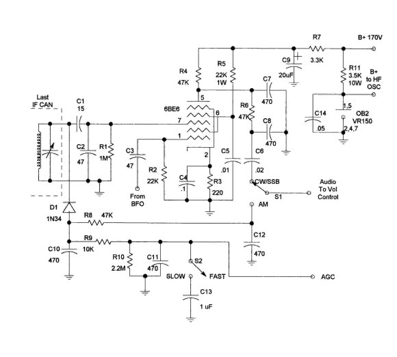

| by
Robert Roehrig, K9EUI
Only
not-for-profit personnal use is authorized for any hardcopy printouts
of this page. Information content presented here is the intellectual
property of Mr. Robert Roehrig and The James Millen Society is
not responsibility for accuracy of content.
Most
any vintage receiver that is used for CW/SSB and the digital modes
can be improved with the addition of a product detector. This
provides undistorted audio without detector overload. The product
detector keeps the BFO signal out of the AGC detector so the AGC
can be left operative and a side benefit is that the S meter will
function as it should. The RF gain can still be reduced manually
if desired although it is seldom necessary.
In
the case of the HRO "senior" receivers, minimal mods
are done to the receiver itself, making restoration to the original
circuit easily possible at a later time if so desired.
In
addition to adding the product detector, I also added voltage
regulation to the HF oscillator stage. The BFO itself is pretty
immune to voltage variations so it was left as is.
For
the product detector, I used a 6BE6 which is socket mounted on
a L bracket under the chassis. The OB2 is similarly mounted. Only
the secondary leads of the last IF-can need to be reconnected
and the BFO ON/OFF switch is rewired to select the appropriate
detector output being fed to the volume control. I recommend using
miniature coaxial cable, such as RG-174, for the connections to
S1 to avoid hum problems.

If
you are fortunate enough to obtain one of the Vector 7 pin sockets
for the 6BE6, the components can be mounted directly on that socket
assembly, otherwise you can use terminal strips or a small PC
board. The AM/AGC detector circuit should be mounted on a separate
terminal strip or PC board mounted close to the IF-can.
After
installation, the BFO is checked to determine if the frequency
needs to be readjusted, and the last IF-can should be realigned.
S2
is the original meter ON/OFF switch. When in the AM mode, the
AGC should be switched to the FAST position.
If
desired, a 6SA7 can be used in place of the 6BE6 using the same
component values.
Using
the product detector in other receivers
I
have successfully used this same circuit in several other receivers
types including a Hammarlund SP-600, a Hallicrafters SX-28A,
and a surplus BC-348-Q. Critical to adapting this circuit to
other receivers is the IF signal level. If overload occurs,
you must increase the value of C2, which acts as a voltage divider
with C1. The BFO injection level does not seem to be quite so
critical and I have had no problems there.
January
15, 1996 |